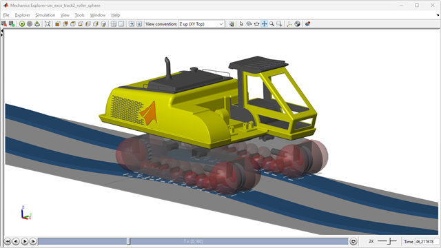
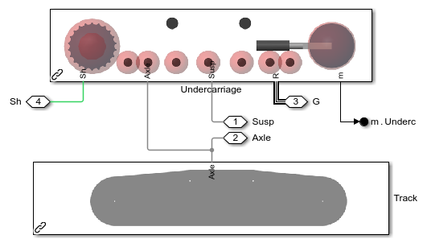
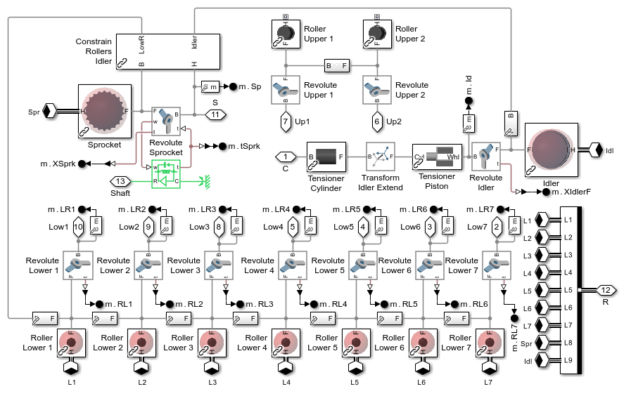
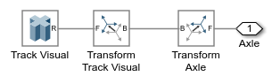
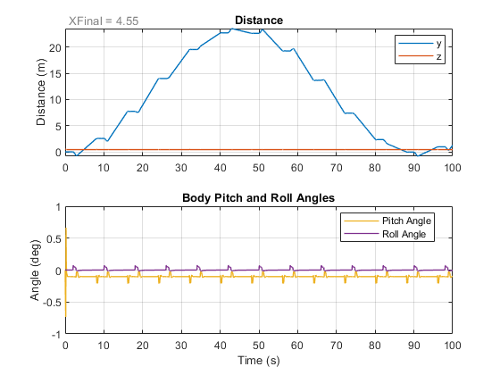
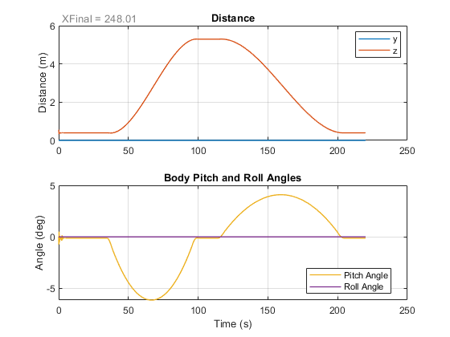
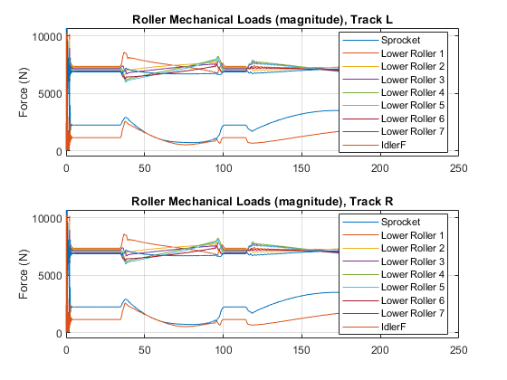
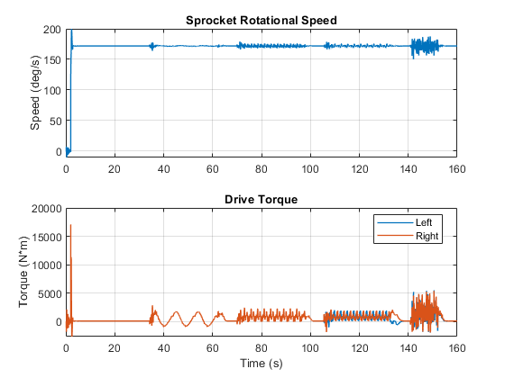

Excavator Tracks, Roller Contact Spheres

(return to Tracked Vehicle Model with Simscape Overview)
This example models the track drive from an excavator in an abstract manner. Contact between the track and the ground is modeled using two spheres on each rollers, sprocket, and idler. The sphere radius includes the depth of the track. This method permits significantly faster simulation for it is far simpler than modeling each segment of the track and all the contact forces with the undercarriage and ground. Contact forces are modeled using the Spatial Contact Force block.
The track can be tested on flat and uneven surfaces. The sprocket is driven with a flexible driveshaft.
Contents
Model
In this example, both tracks are modeled along with the chassis of excavator.

Track Subsystem
The track is composed of the undercarriage and a visual element to represent the track segments which includes parameters for the assumed mass, inertia, and CG of the track segments. The undercarriage contains the rollers, sprocket, and idler which are rigidly attached to the frame. Contact geometry (spheres) in the undercarriage subsystem connect via a Simscape bus to Spatial Contact Force block to model ground contact.
Rollers Subsystem
This subsystem models the rollers, idler, and sprocket. They each can rotate around shafts attached to the lower frame. In this abstract model, the tensioner holds the idler at a fixed position, the position it would reach if the track were holding it in place.
The sprocket joint interfaces to 1D mechanical rotational port. This represents a mechanical shaft connection to the sprocket. It can be attached to Simscape models of gears, hydrostatic transmissions, and electric motors.
The bus of connections at port R contains the connections to the geometry that is used to model contact with the ground. The rollers, sprocket, and idler have point clouds whose radius includes the depth of the track.
Lower Roller Subsystem
The lower rollers, sprocket, and idler contain a solid to represent the inertial properties, and two spheres to model contact with the ground. The spheres are positioned so that they touch the ground at the edges of the track.
Track Subsystem
The track is modeled as a solid. It provides a visual indication of where the track segements would be. It also includes mass and inertia properties which can be parameterized to match the full set of track segments.
Simulation Results: Flat Surface
Below are the simulation results from a test where the track is driven on a flat surface. The terrain is defined using the The tracks are driven at different speeds so that the tracked vehicle can turn. Infinite Plane block.
Elapsed Sim Time = 18.8592
Simulation Results: Plateau
Below are the simulation results from a test where the track is driven on a plateau. The terrain is defined using an extrusion, and the contact patches are moved into place below each roller and oriented based on the position of the location of the roller center.
Elapsed Sim Time = 97.2542 
Simulation Results: Rough Road
Below are the simulation results from a test where the track is driven on a rough road. The terrain is defined using an extrusion, and the contact patches are moved into place below each roller and oriented based on the position of the location of the roller center.
Elapsed Sim Time = 46.4486
Simulation Results: Static Load Test
In this test, we let vehicle settle on flat ground and check final value of roller loads along vehicle vertical axis. This static test helps us see if the abstract representation of the masses is correct (amount, location). Note that measuring the roller loads does not take into account any mass below the roller.
Elapsed Sim Time = 7.5846